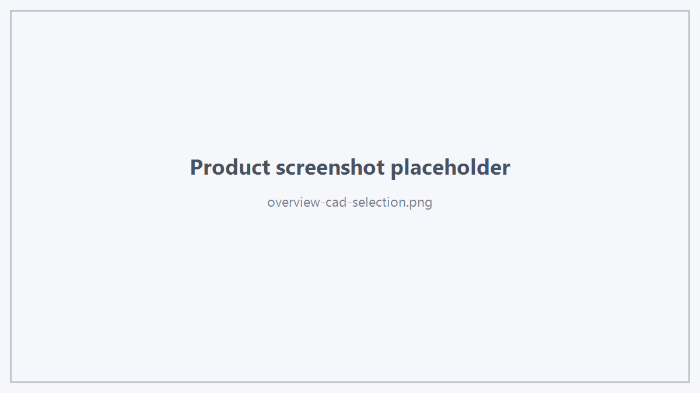
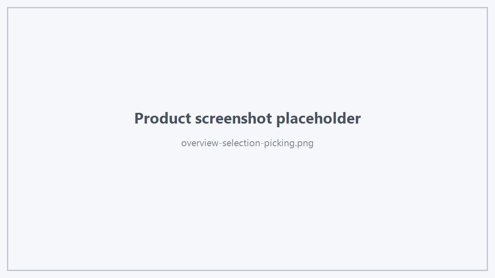
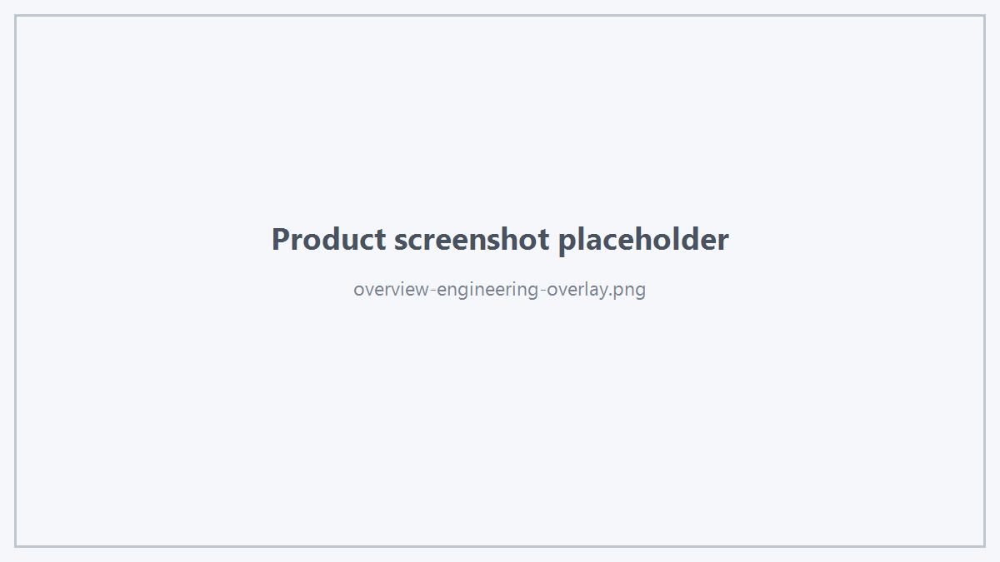

- 制作者
 1.18.0
1.18.0
Industrial 3D Visualization SDK for CAD / CAE
Hts Viewer SDK 是面向 CAD、CAE 与工业三维应用的 C++ 三维显示 SDK。SDK 对外提供独立、稳定的公开数据类型与统一 Viewer Facade，可用于构建 CAD 前处理、CAE 网格显示、工程模型浏览、求解结果辅助显示以及其他需要工业三维交互能力的软件。
支持 Object、Body、Face、Edge、Vertex 等业务层级的显示数据和稳定语义标识，可在显示、选择、显隐和样式操作中保持业务对象对应关系。

提供独立的 Mesh 数据模型，支持 Surface / Volume Mesh、Mesh Part、面线混合显示、线框、透明网格、局部样式、局部显隐与 Mesh 统计。
提供 Object / Body / Face / Edge / Vertex 多层级选择、查询式 Pick、框选、Hover、特征点查询、屏幕射线和世界坐标投影能力。

支持持久颜色、透明度、金属度、粗糙度、镜面强度以及工程材质预设，可用于金属、介质、AirBox 等典型 CAD/CAE 显示场景。
提供临时 Preview Geometry、Preview Axis、Feature Marker，以及 Boundary、Excitation、Plane Wave 等工程可视化能力。

Hts Viewer Demo 使用与 SDK 用户相同的公开接口与 Hts3dViewerSDK 运行库，可用于产品体验、授权管理、显示验证和 SDK 能力评估。
SDK 使用者推荐只包含：
并通过：
访问 Viewer 能力。
Hts Viewer SDK 不要求业务程序直接使用 OpenSceneGraph 类型。CAD 内核、网格器、求解器或自定义业务模块只需要向 Viewer 提交公开 DTO。
上图只表达**公开调用边界**，不代表或披露 Viewer 内部实现结构。
首次评估产品：
准备正式集成：
按功能开发：
大模型与工程接入：
接口查询：